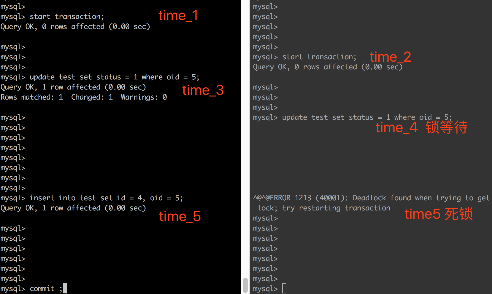

记一次mysql死锁（gap/next-key lock & insert intention lock）
说明：
（1）为方便测试，以下测试均使用test 测试表，其表结构为：
Table: test
Create Table: CREATE TABLE `test` (
`id` bigint(20) NOT NULL,
`oid` bigint(20) NOT NULL,
`status` tinyint(2) DEFAULT '0',
PRIMARY KEY (`id`),
KEY `idx_oid` (`oid`)
) ENGINE=InnoDB DEFAULT CHARSET=utf8
（2）以下事物隔离级别均为RR
一、插入意向锁
1.1 认识插入意向锁
官方介绍：
插入若干数据如下
mysql> select * from test;
+----+-----+--------+
| id | oid | status |
+----+-----+--------+
| 1 | 1 | 0 |
| 2 | 2 | 0 |
| 5 | 5 | 0 |
| 10 | 10 | 0 |
+----+-----+--------+
（1）按时序分别执行两个事物：
| time | trx_a | trx_b |
|---|---|---|
| time_1 | start transaction; | |
| time_2 | start transaction; | |
| time_3 | select * from test where oid = 5 for update ; | |
| time_4 | insert into test set id = 3, oid = 3; （锁等待， 插入意向锁） |
（2）show engine innodb status :
------------
TRANSACTIONS
------------
Trx id counter 57450
Purge done for trx's n:o < 57448 undo n:o < 0 state: running but idle
History list length 716
LIST OF TRANSACTIONS FOR EACH SESSION:
---TRANSACTION 281479621176896, not started
0 lock struct(s), heap size 1136, 0 row lock(s)
---TRANSACTION 57449, ACTIVE 4 sec inserting
mysql tables in use 1, locked 1
LOCK WAIT 2 lock struct(s), heap size 1136, 1 row lock(s), undo log entries 1
MySQL thread id 3, OS thread handle 123145316274176, query id 277 localhost root update
insert into test set id = 3, oid = 3
------- TRX HAS BEEN WAITING 4 SEC FOR THIS LOCK TO BE GRANTED:
RECORD LOCKS space id 1089 page no 4 n bits 80 index idx_oid of table `test`.`test` trx id 57449 lock_mode X locks gap before rec insert intention waiting
//插入意向锁
Record lock, heap no 6 PHYSICAL RECORD: n_fields 2; compact format; info bits 0
0: len 8; hex 8000000000000005; asc ;;
1: len 8; hex 8000000000000004; asc ;;
------------------
---TRANSACTION 57448, ACTIVE 8 sec
4 lock struct(s), heap size 1136, 5 row lock(s)
MySQL thread id 4, OS thread handle 123145316552704, query id 276 localhost root cleaning up
其中 gap before rec insert intention waiting 即为插入意向锁
1.2 插入意向锁的特性与作用
论 MySql InnoDB 如何通过插入意向锁控制并发插入 介绍了插入意向锁的主要作用：提升并发插入能力。
插入意向锁本质上可以看成是一个
Gap Lock
- 普通的Gap Lock 不允许 在 （上一条记录，本记录） 范围内插入数据
- 插入意向锁Gap Lock 允许 在 （上一条记录，本记录） 范围内插入数据
插入意向锁的作用是为了提高并发插入的性能， 多个事务 同时写入 不同数据 至同一索引范围（区间）内，并不需要等待其他事务完成，不会发生锁等待
但是需要注意：需要强调的是，虽然插入意向锁中含有意向锁三个字，但是它并不属于意向锁而属于间隙锁，因为意向锁是表锁而插入意向锁是行锁。
1.3 插入意向锁和其他锁的兼容性
Mysql锁详解（行锁、表锁、意向锁、Gap锁、插入意向锁）给出了锁介绍及锁兼容情况，及常见的插入意向锁冲突。
注1：兼容性需要关注加锁顺序，因此兼容性表格不是对称的
注2：此表格阅读方式为，先横载纵；表示先增加横向的某个锁，是否与纵向的其他锁兼容
| 是否兼容 | gap | insert intention | record | next-key |
|---|---|---|---|---|
| gap | 是 | 是 | 是 | 是 |
| insert intention | 否 | 是 | 是 | 否 |
| record | 是 | 是 | 否 | 否 |
| next-key | 是 | 是 | 否 | 否 |
从图中可以看出， 如果前一个事务 持有 gap 锁， 或者 next-key 锁的时候，后一个事务如果想要持有 insert intention 锁的时候会 不兼容，出现锁等待。
二、死锁分析
从1.3节可以看出， 关于 insert intention 的锁等待有两种情况
case1: 事务a 获得 gap lock； 事务 b insert intention 等待
case2: 事务a 获得next-key lock; 事务 b insert intention 等待;
2.1 死锁复现
最近线上出现了死锁，原因就是基于case2, 和 mysql并发insert死锁问题——gap、插入意向锁冲突 有一点类似， 但是本人遇到是的，update 和 insert 操作 在两个事务并发的时候 死锁，具体如下：
事务开始前，数据情况如下：
mysql> select * from test;
+----+-----+--------+
| id | oid | status |
+----+-----+--------+
| 1 | 1 | 0 |
| 2 | 2 | 0 |
| 5 | 5 | 0 |
| 10 | 10 | 0 |
+----+-----+--------+
按照时序进行操作，出现死锁，如下：
| time | trx_a | trx_b |
|---|---|---|
| time_1 | start transaction; | |
| time_2 | start transaction; | |
| time_3 | update test set status = 1 where oid = 5; | |
| time_4 | update test set status = 1 where oid = 5; (锁等待) | |
| time_5 | insert into test set id = 4, oid = 5; | ERROR 1213 (40001): Deadlock found when trying to get lock; try restarting transaction |
此时出现死锁，截图如下：

执行 show engine innodb status , 找到对应的 LATEST DETECTED DEADLOCK 如下（附部分解析）：
------------------------
LATEST DETECTED DEADLOCK
------------------------
2019-07-08 19:55:23 0x700000d95000
*** (1) TRANSACTION:
TRANSACTION 57432, ACTIVE 44 sec starting index read
mysql tables in use 1, locked 1
LOCK WAIT 2 lock struct(s), heap size 1136, 1 row lock(s)
MySQL thread id 3, OS thread handle 123145316274176, query id 176 localhost root updating
update test set status = 1 where oid = 5
//事务b操作语句
*** (1) WAITING FOR THIS LOCK TO BE GRANTED:
RECORD LOCKS space id 1089 page no 4 n bits 72 index idx_oid of table `test`.`test` trx id 57432 lock_mode X waiting
//RECORD LOCKS 表示记录锁,space id为1089,page号4 ，n bits 72表示这个聚集索引记录锁结构上留有72个Bit位
//表示事务1 正在等待表 test 上的 idx_oid 的 X 锁; 本案例中其实是Next-Key lock
Record lock, heap no 4 PHYSICAL RECORD: n_fields 2; compact format; info bits 0
0: len 8; hex 8000000000000005; asc ;;
1: len 8; hex 8000000000000005; asc ;;
*** (2) TRANSACTION:
TRANSACTION 57431, ACTIVE 59 sec inserting
mysql tables in use 1, locked 1
5 lock struct(s), heap size 1136, 4 row lock(s), undo log entries 2
MySQL thread id 4, OS thread handle 123145316552704, query id 177 localhost root update
insert into test set id = 4, oid = 5
//事务a 的操作sql
*** (2) HOLDS THE LOCK(S):
RECORD LOCKS space id 1089 page no 4 n bits 72 index idx_oid of table `test`.`test` trx id 57431 lock_mode X
//显示了事务2 insert into test set id = 4, oid = 5 持有了a=5 的Lock mode X |LOCK_GAP
Record lock, heap no 4 PHYSICAL RECORD: n_fields 2; compact format; info bits 0
0: len 8; hex 8000000000000005; asc ;;
1: len 8; hex 8000000000000005; asc ;;
*** (2) WAITING FOR THIS LOCK TO BE GRANTED:
RECORD LOCKS space id 1089 page no 4 n bits 72 index idx_oid of table `test`.`test` trx id 57431 lock_mode X locks gap before rec insert intention waiting
//表示事务2的insert 语句正在等待插入意向锁 lock_mode X locks gap before rec insert intention waiting (LOCK_X + LOCK_REC_GAP )
这里需要各位注意的是锁组合，类似lock_mode X waiting ,lock_mode X,lock_mode X locks gap before rec insert intention waiting 是我们分析死锁的核心重点。
Record lock, heap no 4 PHYSICAL RECORD: n_fields 2; compact format; info bits 0
0: len 8; hex 8000000000000005; asc ;;
1: len 8; hex 8000000000000005; asc ;;
*** WE ROLL BACK TRANSACTION (1)
如何阅读死锁日志 有较为详细的介绍了如何解读死锁日志；关键解析如下：
(1)事务b解析
update test set status = 1 where oid = 5 //事务b操作语句
* (1) WAITING FOR THIS LOCK TO BE GRANTED:
RECORD LOCKS space id 1089 page no 4 n bits 72 index idx_oid of table
test.testtrx id 57432 lock_mode X waiting //RECORD LOCKS 表示记录锁,space id为1089,page号4 ，n bits 72表示这个聚集索引记录锁结构上留有72个Bit位 //表示事务b 正在等待表 test 上的 idx_oid 的 X 锁; 本案例中其实是Next-Key lock
(2)事务a解析
insert into test set id = 4, oid = 5 //事务a 的操作sql
* (2) HOLDS THE LOCK(S):
RECORD LOCKS space id 1089 page no 4 n bits 72 index idx_oid of table
test.testtrx id 57431 lock_mode X //显示了事务2 insert into test set id = 4, oid = 5 持有了a=5 的Lock mode X |LOCK_GAPRecord lock, heap no 4 PHYSICAL RECORD: n_fields 2; compact format; info bits 0 0: len 8; hex 8000000000000005; asc ;; 1: len 8; hex 8000000000000005; asc ;;
* (2) WAITING FOR THIS LOCK TO BE GRANTED:
RECORD LOCKS space id 1089 page no 4 n bits 72 index idx_oid of table
test.testtrx id 57431 lock_mode X locks gap before rec insert intention waiting //表示事务2的insert 语句正在等待插入意向锁 lock_mode X locks gap before rec insert intention waiting (LOCK_X + LOCK_REC_GAP ) 这里需要各位注意的是锁组合，类似lock_mode X waiting ,lock_mode X,lock_mode X locks gap before rec insert intention waiting 是我们分析死锁的核心重点。
具体分析如下：
| time | trx_a | trx_b |
|---|---|---|
| time_1 | start transaction; | |
| time_2 | start transaction; | |
| time_3 | update test set status = 1 where oid = 5; 由于oid=5 的数据存在，申请获得 next-key lock， 申请成功； |
|
| time_4 | update test set status = 1 where oid = 5; (锁等待) 由于oid=5 的数据存在， 申请获取next-key lock， 但是此时已经有 next-key lock 因此等待中； |
|
| time_5 | insert into test set id = 4, oid = 5; 申请插入意向锁，但是已经有个next-key lock存在，因此等待中； |
ERROR 1213 (40001): Deadlock found when trying to get lock; try restarting transaction 因此互相等待，行成环形等待 |
2.2 注意点
上述时序的两个并发操作并不一定死锁。
如：
事务开始前，数据情况如下：
mysql> select * from test;
+----+-----+--------+
| id | oid | status |
+----+-----+--------+
| 1 | 1 | 0 |
| 2 | 2 | 0 |
| 5 | 5 | 0 |
| 10 | 10 | 0 |
+----+-----+--------+
按照时序进行操作，不会出现死锁，如下：
| time | trx_a | trx_b |
|---|---|---|
| time_1 | start transaction; | |
| time_2 | start transaction; | |
| time_3 | update test set status = 1 where oid = 5; | |
| time_4 | update test set status = 1 where oid = 5; (锁等待) | |
| time_5 | insert into test set id = 6, oid = 5; //(注意，此时id = 6 , 大于5) | Query OK, 1 row affected |
原因，插入的主键id 大于 oid 对应的 主键id;
剩下部分属于臆测，不完全推测：由于next-key lock 中的gap lock 可以分解为 两个部分，（pre, 5）和 （5，next）, pre 和 next 分别为 oid 索引的 数据为5 时的前一条数据和后一条数据；等待上锁的时候，先等待给（pre，5）上锁，其对应的主键id 小于 oid = 5 时的主键id 5; 所以当事务1插入 主键id 大于5 的数据时，不会造成锁等待；因此插入意向锁实则为gap锁，当 主键id 大于5 的数据时，此时的gap 区间为 （5，next）, 而事务b 此时在等待给（pre, 5）上锁，因此不会产生等待，故执行成功。
三、小结
发生死锁的时候是个很好的提升数据库能力的时候，总结解决思路：
（1）根据show engine innodb status , 找出对应的死锁sql，进而找到对应的事务完整执行情况；
（2）尤其注意 插入意向锁 和 gap/insert intention 之间的锁等待；
（3）借助 INNODB_LOCKS 、INNODB_LOCK_WAITS 等表数据进一步分析。
四、参考
[1] 如何阅读死锁日志